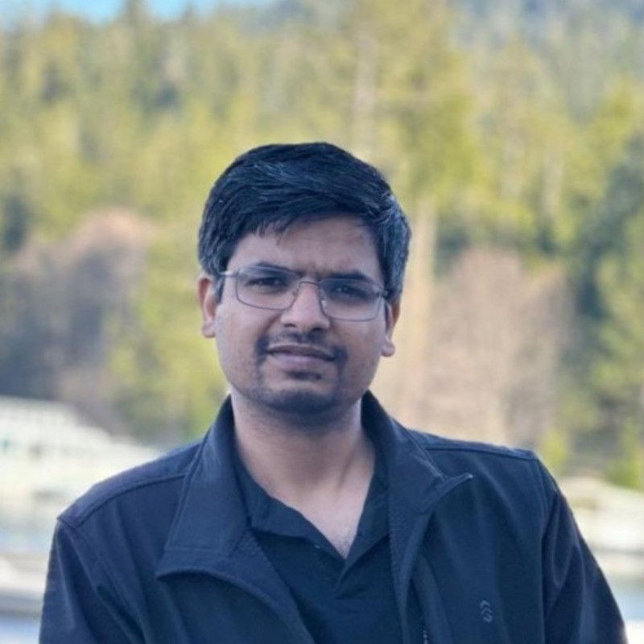
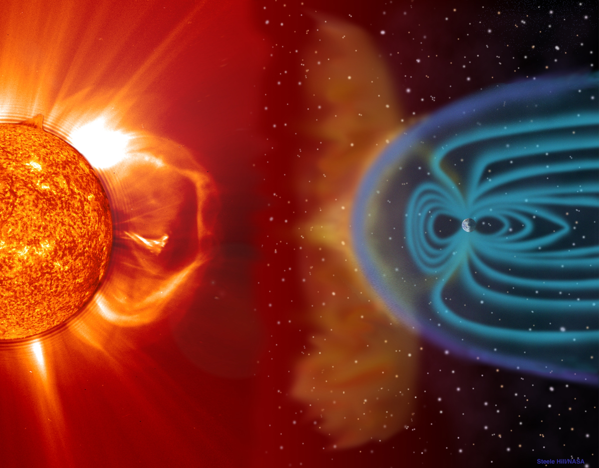
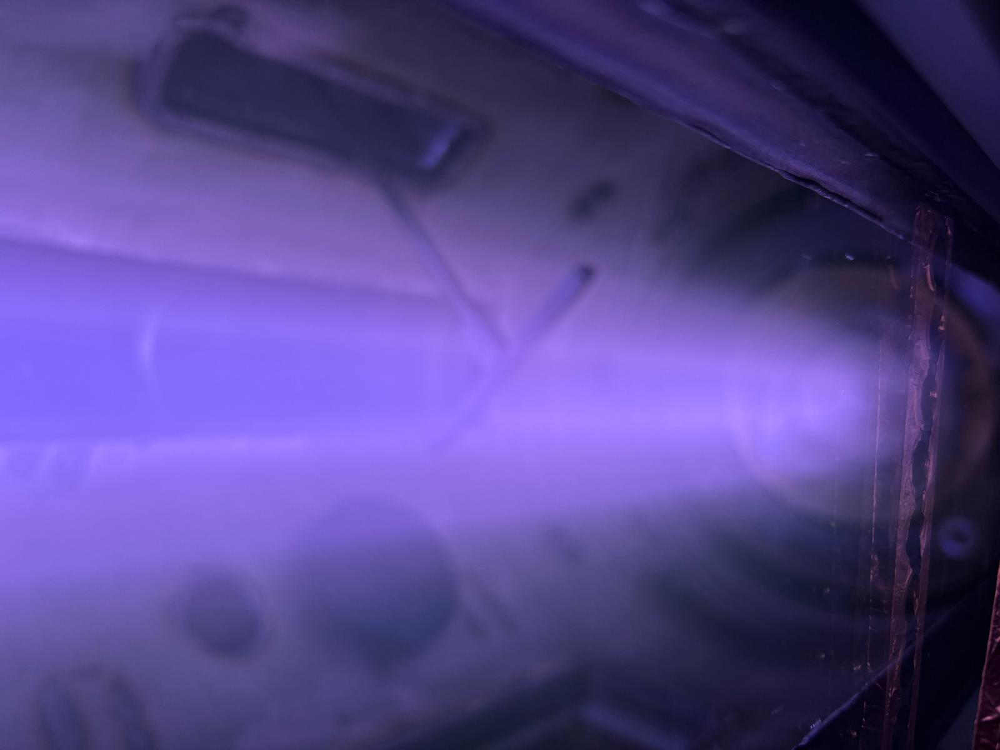
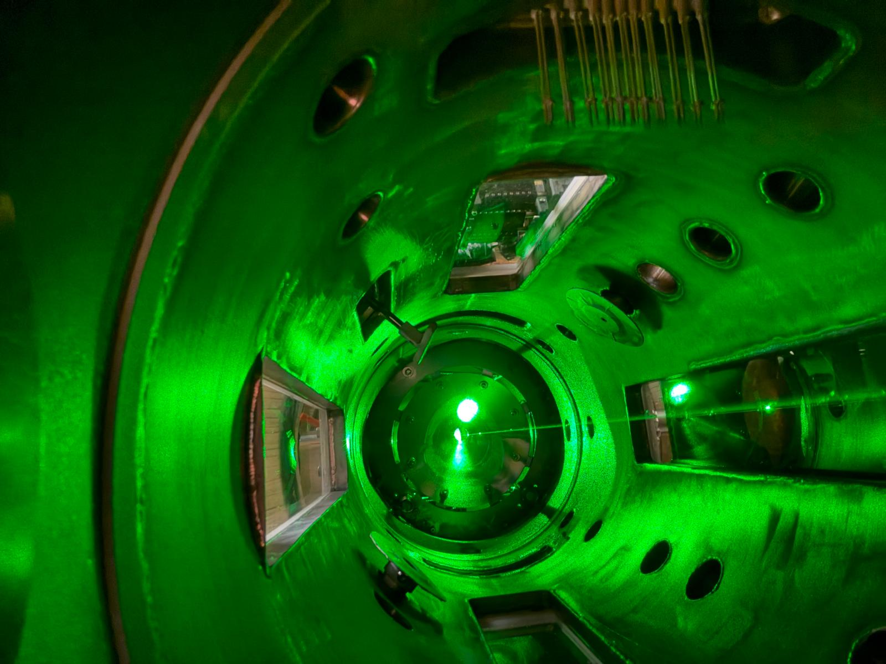

Magnetic reconnection
Investigating electron energization and kinetic pathways during strong guide-field reconnection in laboratory plasmas.
Experimental plasma physics & instrumentation
Exploring how plasmas energize particles—and building the instruments to measure it.
Postdoctoral Researcher · West Virginia University
Center for KINETIC Plasma Physics
Incoming Diagnostic Physicist · Daedal Systems, Toronto
Starting October 15, 2026

About
I am an experimental plasma physicist studying magnetic reconnection, wave–particle interactions, and electron kinetics. My work combines laboratory experiments with time-resolved measurements of particle distributions, plasma parameters, and electromagnetic fields.
At West Virginia University, I work on the PHASMA experiment, with a particular focus on Thomson scattering and kinetic processes during strong guide-field magnetic reconnection. I also develop and operate plasma diagnostics, experimental control systems, and data-analysis tools.
My broader goal is to translate fundamental plasma measurements into deployable diagnostic instruments for fusion, space, and semiconductor applications.
Research
Investigating electron energization and kinetic pathways during strong guide-field reconnection in laboratory plasmas.
Connecting plasma-wave measurements with electron velocity distributions to understand resonant energy transfer.
Developing quantitative diagnostics to measure density, temperature, particle distributions, and electromagnetic fields.
Featured research · 2026
Accepted in Physical Review LettersTime-resolved Thomson scattering measurements in PHASMA reveal the evolution of electron velocity distributions during magnetic reconnection. Discrete velocity-space enhancements near wave-resonant velocities connect lower-hybrid waves with electron energization.
The work combines direct kinetic measurements with quantitative analysis of wave electric fields and interaction times, providing experimental evidence for a wave-mediated pathway to electron energization.
Sonu Yadav, Thomas Rood, Earl Scime, and collaborators · Accepted; in production


Diagnostics & development
Time-resolved measurements of electron velocity distributions, electron temperature, and density. Experience with pulsed lasers, collection optics, spectral filtering, gated detectors, calibration, and analysis.
Langmuir and triple probes, retarding-field energy analyzers, laser-induced fluorescence, and B-dot arrays for plasma parameters, ion kinetics, and magnetic-field measurements.
Vacuum systems, pulsed plasma sources, triggering, data acquisition, and analysis using MATLAB and LabVIEW.
Developing diagnostic approaches that connect fundamental measurements with calibration, prototypes, and practical deployment. My upcoming work at Daedal Systems will focus on Thomson-scattering diagnostic development for fusion applications.

Publications
Sonu Yadav, Thomas Rood, Earl Scime, and collaborators.
Physical Review Letters · Accepted, 2026.
For my full publication list and citation record, visit Google Scholar or ORCID.
Invited presentations
The 2026 list includes both delivered and forthcoming invited presentations.
Leadership & service
Contact
I welcome conversations about plasma experiments, kinetic diagnostics, instrument development, and research collaborations.